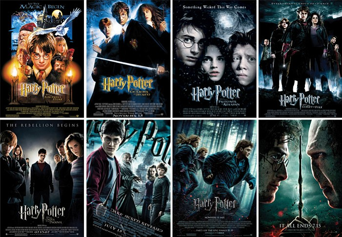

My Favourite Character
My favourite character of all time is Hermione Granger.

Harry Potter is a film series based on the eponymous novels by J. K. Rowling. The series is distributed by Warner Bros. and consists of eight fantasy films, beginning with Harry Potter and the Philosopher's Stone (2001) and culminating with Harry Potter and the Deathly Hallows – Part 2 (2011). A spin-off prequel series that will consist of five films started with Fantastic Beasts and Where to Find Them (2016), marking the beginning of the Wizarding World shared media franchise. The series was mainly produced by David Heyman, and stars Daniel Radcliffe, Rupert Grint, and Emma Watson as the three leading characters: Harry Potter, Ron Weasley, and Hermione Granger. Four directors worked on the series: Chris Columbus, Alfonso Cuarón, Mike Newell, and David Yates. Michael Goldenberg wrote the screenplay for Harry Potter and the Order of the Phoenix (2007), while the remaining films' screenplays were written by Steve Kloves. Production took place over ten years, with the main story arc following Harry's quest to overcome his arch-enemy Lord Voldemort. Harry Potter and the Prizoner of Azkaban contains magic,friendship,loyalty,a bit of fun and so much more that makes it my favourite book.

Hermione Granger is beautiful, smart, kind, and will do anything for the people she loves. She is very loyal and brave,this is why she is my favourite character.

click on the image to know about J.K.Rowling